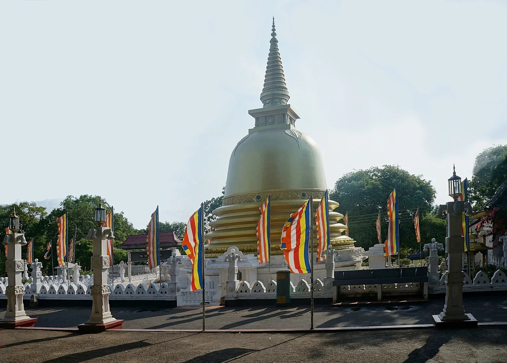
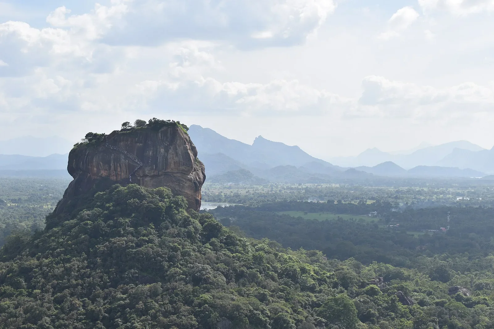

Day 1Airport to Sigiriya
Meet your driver at the airport and travel into the Cultural Triangle, stopping at Dambulla before reaching Sigiriya.
- Airport pickup
- Dambulla Cave Temple
- Sigiriya village or sunset experience
- Overnight in Sigiriya

